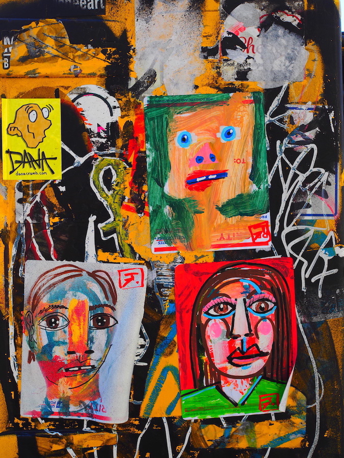
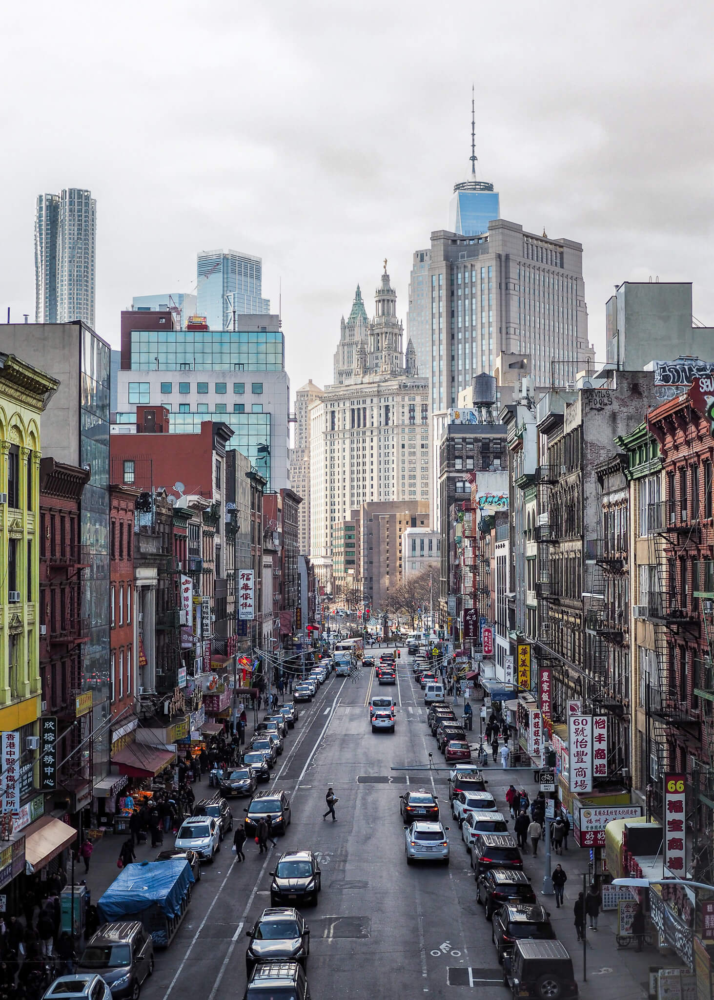
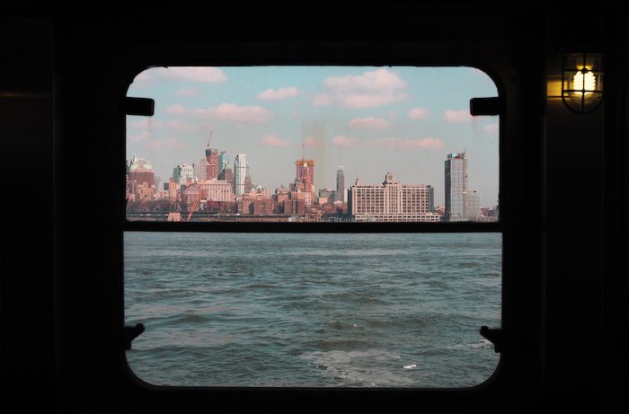
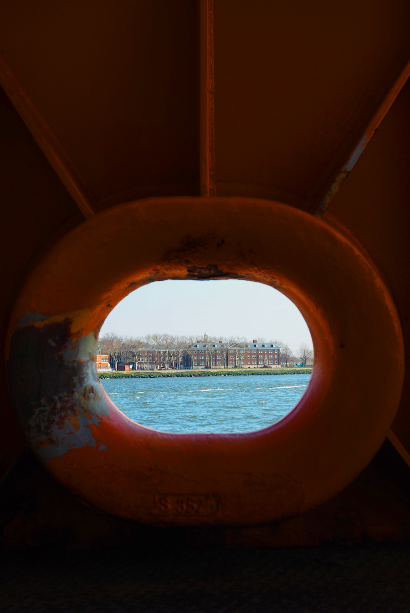
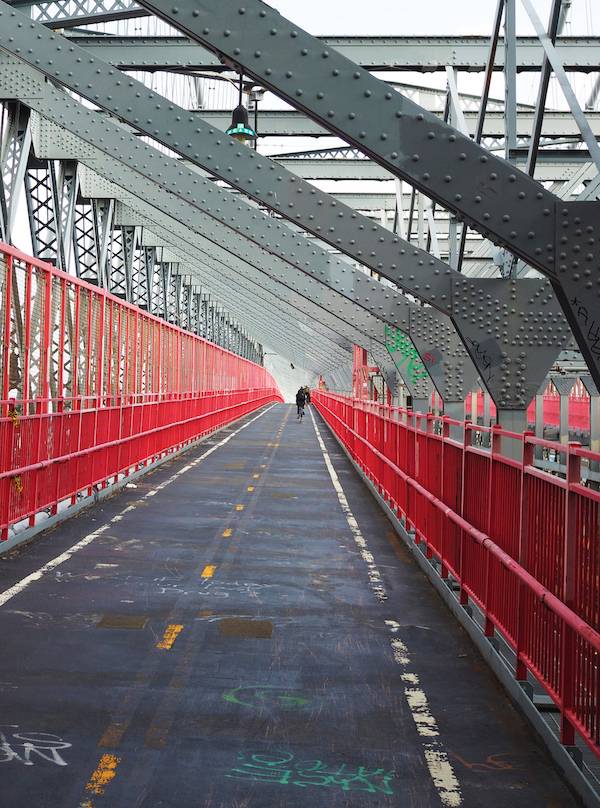

New York City







Favourite spots in the city:
Inspiration Point in Fort Tryon Park
Morgan Library & Museum
The High Line
Metropolitan Museum of Art
Bow Bridge in Central Park
Hunter's Point South Park
Manhattan Bridge
Museum of the City of New York
Absolute Bagels
Jackson Diner
Famous Famiglia
The Smith
Tamashii
St. Mazie Bar & Supper Club